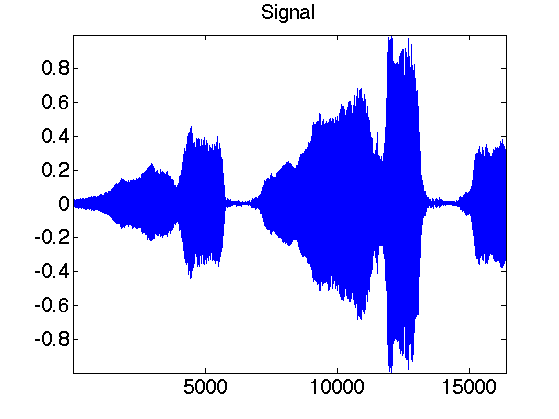
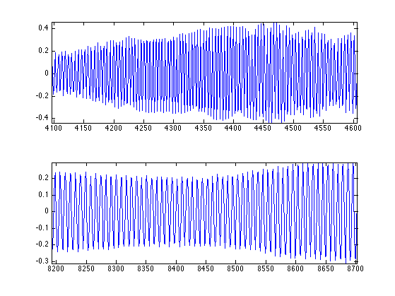

Basic Matlab/Scilab Instructions
This tour shows some basics about Matlab/Scilab programming.
Contents
Installing toolboxes and setting up the path.
You need to download the following files: signal toolbox and general toolbox.
You need to unzip these toolboxes in your working directory, so that you have toolbox_signal and toolbox_general in your directory.
For Scilab user: you must replace the Matlab comment '%' by its Scilab counterpart '//'.
Recommandation: You should create a text file named for instance numericaltour.sce (in Scilab) or numericaltour.m (in Matlab) to write all the Scilab/Matlab command you want to execute. Then, simply run exec('numericaltour.sce'); (in Scilab) or numericaltour; (in Matlab) to run the commands.
Execute this line only if you are using Matlab.
getd = @(p)path(p,path); % scilab users must *not* execute this
Then you can add the toolboxes to the path.
getd('toolbox_signal/'); getd('toolbox_general/');
Comments
Matlab and Scilab are very similar languages. One of the main difference is that Matlab uses the character % to write comments, whereas Scilab uses the C-like syntax //.
% this is a Matlab comment
It is thus very important, in all the numerical tours, to replace % comments by // comments if you are using Scilab.
Basic Matlab/Scilab commands.
The basic data is a 1D or 2D array.
a = 1; a = 2+1i; % real and complex numbers b = [1 2 3 4]; % row vector c = [1; 2; 3; 4]; % column vector d = 1:2:7; % here one has d=[1 3 5 7]
You an acess one entry of an array, or select a sub-array by indexing.
% display the size size(d) % display the first entry d(1) % display the sub-array containing entries 1 and 2 d(1:2)
You can create pre-defined array using some basic functions
% identity, 1 and random matrices A = eye(4,4); B = ones(4,4); C = rand(4,4); % transpose c = b';
The multiplication operator * is the matrix multiplication. To actually multiplies each entry of a vector, you need to use .*
% note the difference D = C*A D = C.*A % You can apply functions to each entry of a matrix E = A./C; % division E = sin(A); % sinus is applied to each entry E = abs(A + 1i*C); % modulus of each entry

You can modify matrices and arrays in various way.
b = sort(b); % sort values b = b .* (b>2); % set to zeros (threshold) the values below 2 b(3) = []; % suppress the 3rd entry of a vector B = [b; b]; % create a matrix of size 2x4 c = B(:,2); % to access 2nd column
Is is possible to access directly the last entry of a vector using the keyword end in Matlab and $ in Scilab.
% The equivalent Scilab code is % b($-2:$) = 1; b(end-2:end) = 1; % to access the last entries % The equivalent Scilab code is % b = b($:-1:1); b = b(end:-1:1); % reverse a vector

Advanced instructions
disp('Hello'); % display a text x = 1.23456; disp( sprintf('Value of x=%.2f', x) ); % print a values with 2 digits A(A==Inf) = 3; % replace Inf values by 3 A(:); % flatten a matrix into a column vector max(A(:)); % max of a matrix % threshold to 0 values below .3. C = C .* (abs(C)>.3);

To display information of about a function, use the help command, for instance help perform_wavelet_transf.
Basic programming constructions include for, while and switch instructions.
for i=1:3 % repeat the loop for i=1, i=2, i=3 disp(i); % make here something end i = 3; while i>0 % while syntax disp(i); % do smth i = i-1; end

Load and visualize signals and images
Load and display an image (download function load_image.m should be in the toolboxes)
n = 256; % size of the image M = load_image('lena', n); clf; imageplot(M);

You can manipulate an image just like an arbitrary array
clf; imageplot(M(1:50,1:50), 'Zoom', 1,2,1); imageplot(-M, 'Reversed contrast', 1,2,2);